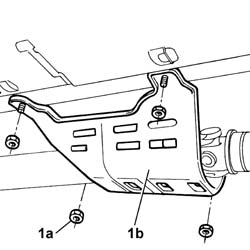
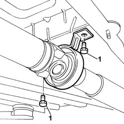
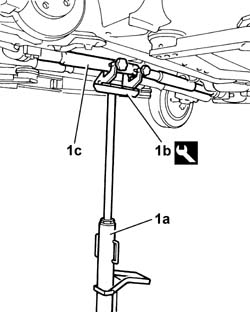
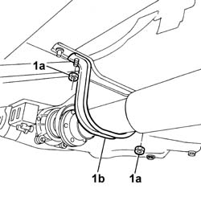
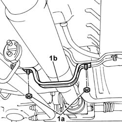
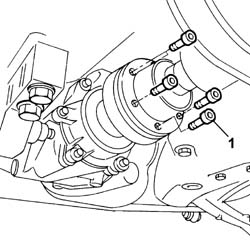
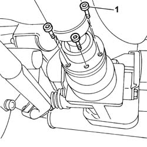
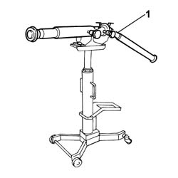

2410A18 TRANSMISSION WITH JOINTS INCLUDED - R.R.
- Path
- Procedures > 24 TRANSMISSION > 2410 TRANSMISSION SHAFT > 2410A TRANSMISSION SHAFT BETWEEN THE TRANSMISSION AND THE DIFFERENTIAL > 2410A18 TRANSMISSION WITH JOINTS INCLUDED - R.R.
- Kind
- repair procedure (removal / refitting; the operation number is the code)
- Applies to
- engines: 1.2 8v, 1.3 JTD 16v; all production periods
- Interactive page
- https://sloeber94.github.io/elrnDB-fPnd/en/#/169001599
Applies to: engines: 1.2 8v, 1.3 JTD 16v; all production periods
 Removing
Removing
 Refitting
RefittingPosition the vehicle on a lift.
Raise the lift.
1. Undo nuts (1a) and remove central guard (1b) protecting the propeller shaft universal joint.

Applies to: engines: 1.2 8v, 1.3 JTD 16v; all production periods
1. Unscrew the bolts securing the central propeller shaft mount/bearing.

Applies to: engines: 1.2 8v, 1.3 JTD 16v; all production periods
1. Position a hydraulic lift (1a) with support tool (1b) to support propeller shaft (1c).
Description | Code | Function | |
|---|---|---|---|
1b | Mounting bracket | 1.870.602.001 | Propeller shaft mount |

Applies to: engines: 1.2 8v, 1.3 JTD 16v; all production periods
1. Undo nuts (1a) and remove front propeller shaft safety bracket (1b).

Applies to: engines: 1.2 8v, 1.3 JTD 16v; all production periods
1. Undo nuts (1a) and remove rear propeller shaft safety bracket (1b).

Applies to: engines: 1.2 8v, 1.3 JTD 16v; all production periods
1. Undo the bolts securing the propeller shaft front coupling to the rear drive idler unit.

Applies to: engines: 1.2 8v, 1.3 JTD 16v; all production periods
1. Unscrew the bolts securing the propeller shaft rear coupling to the viscous coupling.

Applies to: engines: 1.2 8v, 1.3 JTD 16v; all production periods
1. Operate the hydraulic lift to lower and remove the propeller shaft complete with joints.

Applies to: engines: 1.2 8v, 1.3 JTD 16v; all production periods
Refitting
RemovingWith the aid of an appropriate hydraulic lift with support tool to support the propeller shaft, fit the shaft in its seat.
Description | Code | Function | |
|---|---|---|---|
- | Mounting bracket | 1.870.602.001 | Propeller shaft mount |
Tighten the bolts securing the propeller shaft rear coupling to the viscous coupling.
Value daNm | Fastening | Component | Ø | |
|---|---|---|---|---|
- | 4 | Bolt | - | M8 |
Tighten the bolts securing the propeller shaft front coupling to the rear drive idler unit.
Value daNm | Fastening | Component | Ø | |
|---|---|---|---|---|
- | 4 | Bolt | - | M8 |
Fit the front and rear safety bracket in its seat and tighten the nuts.
Tighten the bolts securing the central propeller shaft mount/bearing to torque.
Value daNm | Fastening | Component | Ø | |
|---|---|---|---|---|
- | 5 | Bolt | - | M10 X 1.25 |
Tighten the nuts securing the central guard protecting the propeller shaft universal joint.
Lower the lift.
Remove the vehicle from the lift.